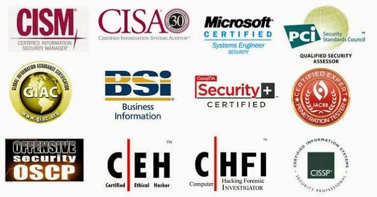

Ruta para ser hacker ético profesional
Un hacker ético necesita conocimientos técnicos, práctica constante y una conducta profesional. Sus pruebas siempre deben realizarse con autorización y dentro de un alcance definido.
Conocimientos fundamentales
Es recomendable estudiar redes, sistemas operativos, programación, bases de datos, seguridad web y conceptos de criptografía. Linux, Windows y Python son herramientas especialmente útiles durante el aprendizaje.
Herramientas de práctica
- Nmap para descubrir hosts y servicios.
- Wireshark para analizar tráfico de red.
- Burp Suite para evaluar aplicaciones web.
- Metasploit para practicar en laboratorios autorizados.
Certificaciones recomendadas

- CompTIA Security+: fundamentos de seguridad.
- CEH: conceptos y técnicas de hacking ético.
- OSCP: pruebas de penetración prácticas.
- CISSP: gestión y arquitectura de seguridad.
Pasos para comenzar
- Aprender redes, sistemas operativos y programación.
- Practicar en laboratorios legales y controlados.
- Documentar hallazgos y aprender divulgación responsable.
- Elegir una certificación según la experiencia y el objetivo profesional.